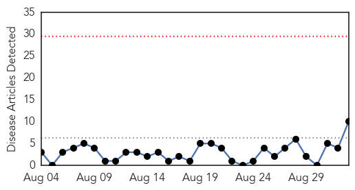
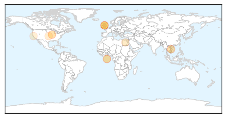

Dengue Fever
30-Day Web Trend
1 alerts, 0 warnings

30-Day Twitter Trend
3 alerts, 0 warnings

Article Locations

Article Confidences

Top Articles:
- 0.999
- Dengue fever: How a mosquito infected millions, and not with malaria
- 0.981
- 26 Cases of Dengue Fever Reported in Mauritius – The Fight Continues
- 0.955
- Dengue scare keeps Delhi government on its toes : Mail Today, News
- 0.950
- Government to identify prevalent dengue virus subtype within a week
- 0.947
- Govt to identify prevalent dengue virus subtype within a week
- 0.929
- Hospitals In Delhi To Treat Dengue Patients First, Postpone Non-Critical Surgeries
- 0.927
- 745 dengue cases confirmed in Chittoor
- 0.906
- Dengue crisis in Delhi continues to grow
- 0.892
- Geared up to tackle dengue: Health ministry
- 0.876
- Geared up to tackle dengue: Health ministry
- 0.872
- Health team visits ‘dengue-hit’ areas in Mansehra
- 0.868
- Health ministryMangalorean.com
- 0.851
- Samoa enhances health surveillance
- 0.711
- Rising civilian casualties in Taiz worry UN
Top Tweets:
- 0.745
- Flavivirus news: 745 dengue cases confirmed in Chittoor - The Hindu: The Hindu745 dengue cases ... http://t.co/LUA2xsikqP pathogenposse
Hepatitis
30-Day Web Trend
0 alerts, 0 warnings

30-Day Twitter Trend
0 alerts, 0 warnings

Article Locations
Article Confidences

Top Articles:
- 0.992
- News Scan for Sep 02, 2015
- 0.957
- Hepatitis B cases rise in Dehradun, doctors fear epidemic in future
- 0.776
- Summit Focuses on 400 Million with Hepatitis
- 0.727
- Putting an end to global health's 'silent killer'
- 0.659
- World Hepatitis Summit harnesses global momentum to eliminate viral hepatitis
- 0.655
- World Hepatitis Summit harnesses global momentum to eliminate viral hepatitis - World
- 0.601
- Glasgow to host first world hepatitis summit
- 0.598
- World Hepatitis Summit harnesses global momentum to eliminate viral hepatitis
- 0.555
- Costly Hepatitis C Drugs for Everyone?
- 0.501
- Are Statins Bad For Me? Personalized Medicine Can't Yet Say
Top Tweets:
-
No tweets found for Sep 02, 2015